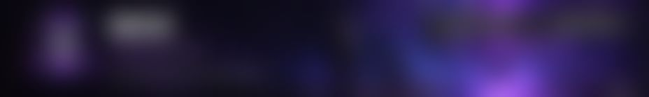
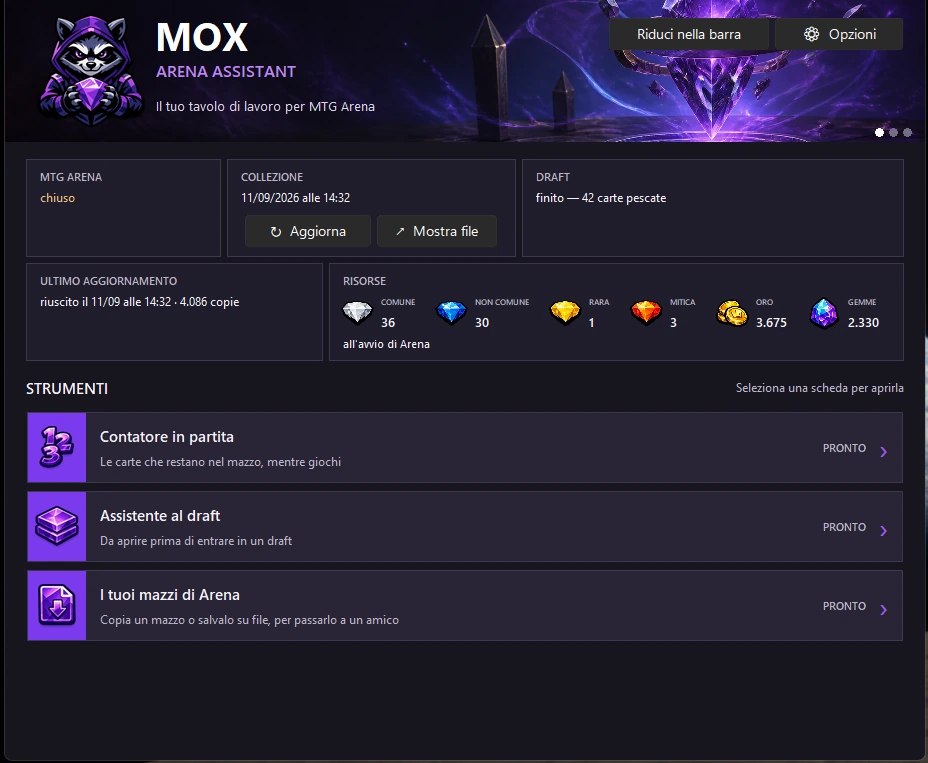
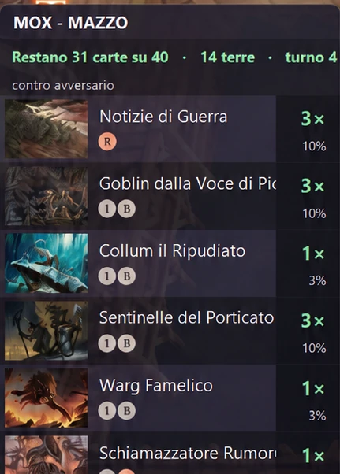
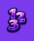
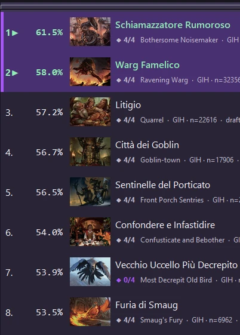
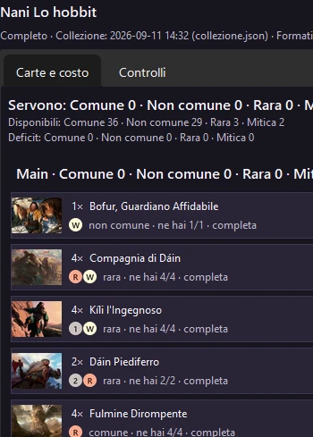
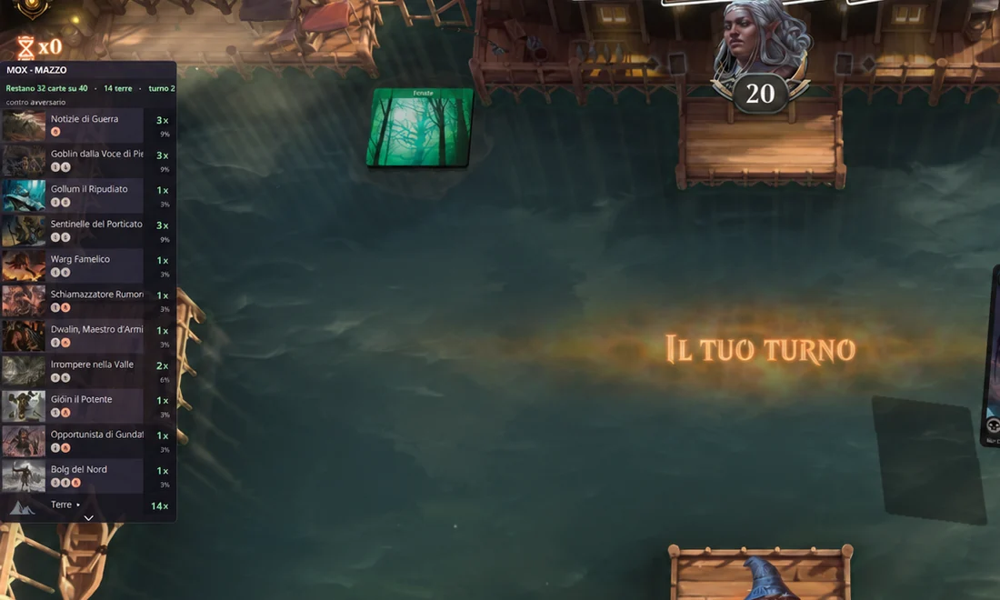
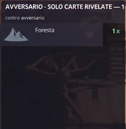
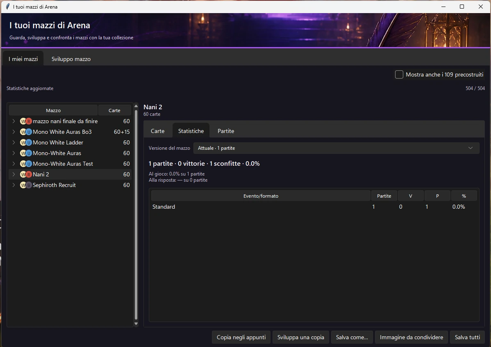

MOX è un assistente per MTG Arena che lavora sul tuo PC, accanto al gioco.
Mentre giochi conta le carte che restano nel tuo mazzo. Nel Draft ti suggerisce la scelta e ti propone il mazzo finale. Dopo, conserva i tuoi mazzi e le statistiche delle partite. Sul web trovi il Meta, i dati Draft e il tuo account.
Per Windows, in beta pubblica. Il download arriva da GitHub.


-


Contatore in partita -

 Assistente al draft
Assistente al draft -

 I tuoi mazzi di Arena
I tuoi mazzi di Arena
Cosa fa MOX
Quattro momenti di una sessione su Arena. Ogni immagine qui sotto è una schermata del programma così com'è oggi.
-
Durante la partita
Contatore in partita
Si apre sopra Arena e tiene il conto delle carte che restano nel tuo mazzo: quante copie, quante terre, che probabilità hai di pescare ognuna. Un secondo pannello elenca le carte che l'avversario ha già rivelato.
Non ti dice cosa giocare: tiene il conto al posto tuo.


Schermata reale. A sinistra il pannello del tuo mazzo; nel riquadro, quello dell'avversario. -
Durante il Draft
Assistente al draftLo apri prima di entrare nel draft. A ogni busta mette in ordine le carte, con la percentuale di vittoria dai dati 17lands e un giudizio in chiaro: carta forte, buona nei tuoi colori, riempimento.

Schermata reale. A sinistra la busta in Arena, a destra la stessa busta ordinata da MOX. -
Dopo il Draft
Assistente al draftQuando il draft finisce, propone il mazzo da montare con le carte del tuo pool: i colori principali, tre combinazioni a confronto e quante terre mettere, da 16 a 18.

Schermata reale. Il mazzo proposto a fine draft, carta per carta. -
Dopo le partite
I tuoi mazzi di ArenaI tuoi mazzi restano sul PC, con le statistiche di ogni versione: partite, vittorie, al gioco e alla risposta, formato per formato. Li confronti con la tua collezione, li copi negli appunti o li salvi su file per passarli a un amico.

Schermata reale. L'elenco dei mazzi e le statistiche di quello selezionato.
MOX sul web
Il sito rende consultabili i dati che si possono pubblicare e, se accedi, il tuo archivio personale. Funziona anche con il programma chiuso.
-
Meta
Filtra gli archetipi per formato, periodo, rank, colore e strategia. Le soglie del campione restano visibili.
Esplora il Meta -
Draft
Eventi e dati Limited, pubblicati quando il campione è affidabile.
Apri i dati Draft -
Il mio MOX
Un accesso privato ai mazzi, alle partite e ai draft dei tuoi dispositivi.
Accedi a Il mio MOX
In sviluppo
Ci stiamo lavorando adesso. Nessuna di queste parti è disponibile oggi, e non hanno una data.
-
MOX Research
Un modo più profondo per leggere i dati reali delle partite, quando metodo e campione saranno pronti.
-
Draft Assistant Next Gen
Un percorso più chiaro fra la scelta, il pool e la costruzione del mazzo finale.
-
Nuova interfaccia
Il programma per Windows avrà una nuova interfaccia, costruita con Tauri.
Pianificato
Idee messe in fila per dopo, senza date. Possono cambiare.
-
Collezione e wildcard mancanti
Quali carte ti mancano per completare una lista, e quante wildcard servono.
-
«Posso costruire questo mazzo?»
Una risposta chiara prima di spendere le wildcard.
-
Editor dei mazzi più completo
Più strumenti per modificare le liste dentro MOX.
-
Ricerca carte e costruzione senza Arena
Cercare carte e montare un mazzo anche con Arena chiuso.
-
Condivisione dei mazzi
Un modo controllato per passare una lista agli amici.
Prova MOX alla prossima partita.
È un programma per Windows, in beta pubblica. Si scarica da GitHub e si apre accanto ad Arena.